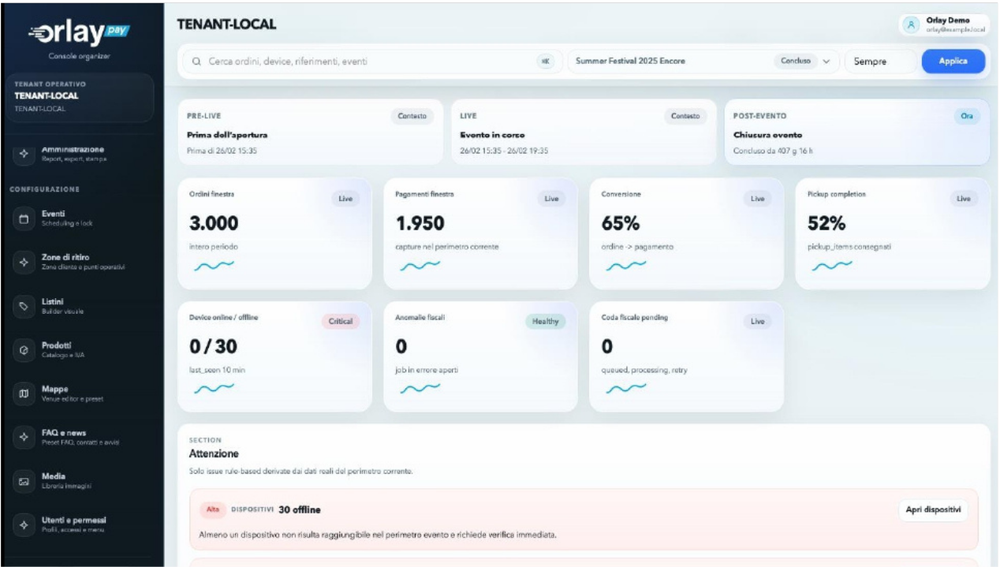

Configure the flow
Set menus, prices, pickup zones, service points and dedicated audience flows before the gates open.
For festivals, stadiums, arenas and high-volume venues
Orlay Pay gives organizers one connected flow for fan QR ordering, staff service and live zone control, so teams can keep sales moving while queues are forming.



What is Orlay Pay?
Orlay Pay is not just a payment tool. It is an operational layer for food and beverage, hospitality, VIP areas, merchandise and dedicated pickup points during live events.
Set menus, prices, pickup zones, service points and dedicated audience flows before the gates open.
Let fans order from their phone, let staff serve structured orders, and monitor live pressure by area.
Understand what sold, where queues formed, which zones underperformed, and what to improve next.
The peak-time problem
When fans have to choose, pay, wait and ask where to collect, the queue becomes a sales leak.
Fans leave the line, buy less, or postpone when the wait feels uncertain.
Operators waste time reconstructing orders, checking payments and explaining pickup instructions.
Revenue, queues, pickup status and zone performance are often split across separate tools.
Without clear data, staffing, pricing and layout decisions are based on perception instead of evidence.
How it works
Orlay Pay keeps the fan journey, staff workflow and organizer control room connected during the moments that matter most.
They scan a QR code, see the right menu, order from their phone and receive clear pickup instructions.
Every order arrives structured, with items, payment status, pickup code and next action already visible.
See live revenue, waiting orders, pickup pressure and critical zones before congestion becomes lost sales.
Use post-event data to optimize pricing, staffing, layout and offer design.
Organizer control room
Monitor revenue, orders, pickup pressure, service points and critical areas from one live operations view.

Fan experience
Fans open Orlay Pay from a QR code, with no app store download. They see the event menu, order from their seat, pay online or complete at the bar, and receive clear pickup instructions.
Show the right products, prices and availability for each zone, audience or service point.
Let fans pay from their phone and reduce the second queue at the counter.
If online payment is not the right path, the fan can still complete the purchase at the bar without losing the order.
Pickup point, code, estimated timing and directions stay visible on the phone.
Staff workflow
Every order reaches the staff device with items, quantities, payment status, pickup code and next action already clear.
Zones and pickup points
Configure service areas, pickup groups, dedicated routes and audience-specific menus so every fan and every staff member knows where to go and what to do.
Route orders to the right pickup point and detect overloaded areas before queues grow.
Balance demand across counters and open fast lanes when needed.
Create dedicated menus, pickup points and routes for premium guests.
Handle short purchase windows without mixing merch queues with food and beverage traffic.
Use cases
Orlay Pay is ideal when thousands of guests, multiple service points and short purchase windows create pressure on sales, staff and pickup operations.
Short breaks, dense crowds and high food and beverage demand.
Multiple bars, food courts and seating zones with synchronized peaks.
Dedicated menus, premium service flows and separate pickup points.
High-intensity purchase windows before, during and after the show.
Controlled audiences, segmented access and tailored service experiences.
Not every venue needs Orlay Pay. It is built for events where queues, service points and peak demand directly affect revenue.
Next-event analytics
After the event, Orlay Pay shows what converted, what slowed down and where demand was lost, so your next staffing, pricing and layout decisions are based on data.
Which zones sold more, slowed down or needed extra staff.
When demand spiked and which service points became bottlenecks.
Which food, beverage, VIP or merch items drove revenue.
Where waiting orders accumulated and how long service took.
Recommendations for staffing, menu design, pickup layout and service routing.
Operational setup
Orlay Pay starts from your event structure: menus, service points, pickup zones, staff devices, QR codes and payment setup.
Event Flow Review
We will map your audience size, peak windows, bars, pickup points, VIP areas, merchandise flows and current payment setup, then show how Orlay Pay would run on your event.
Book my event flow review